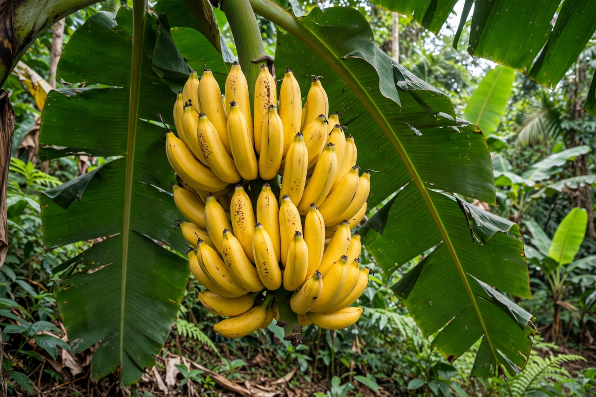
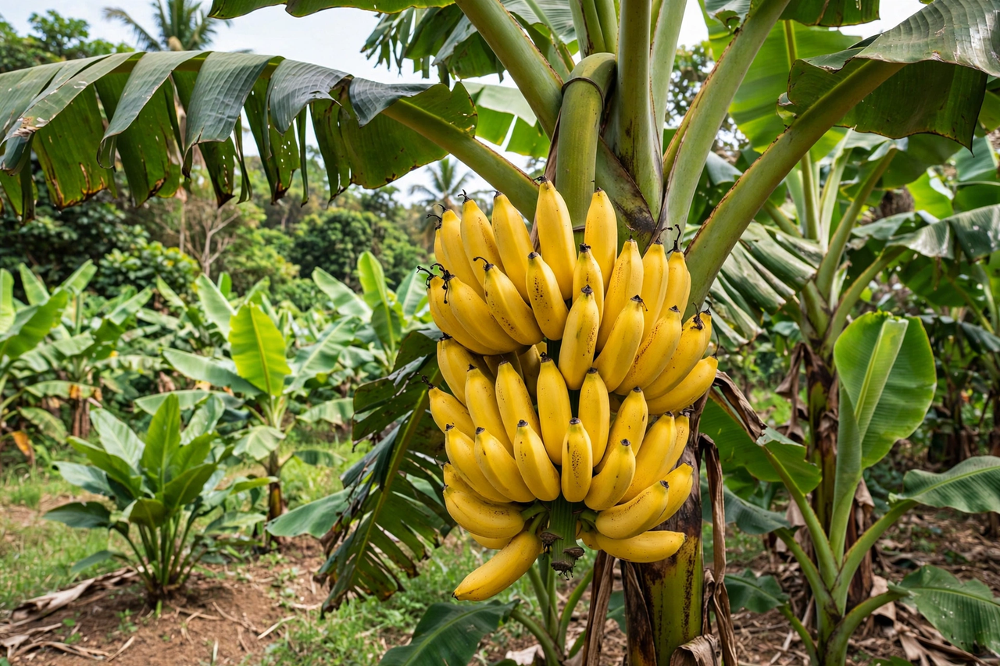

Banana

From Wikipedia, the free encyclopedia

A banana is an elongated, edible fruit — botanically a berry — produced by several kinds of large herbaceous flowering plants in the genus Musa. Dessert bananas, the familiar sweet yellow fruit eaten raw, are usually sterile triploid hybrids of Musa acuminata and Musa balbisiana, seedless and propagated vegetatively from suckers. Firmer, starchier cooking bananas are called plantains. The Cavendish subgroup accounts for the great majority of internationally traded bananas, having replaced the earlier Gros Michel in the 1950s–60s after Panama disease devastated plantations. India is the world's largest producer by volume, though most of its crop is eaten domestically; Ecuador is the leading exporter.
Description and cultivation
Bananas grow in hanging clusters from a thick pseudostem of tightly wrapped leaf sheaths; the plant is a giant herb, not a tree. Fruits develop as the "hands" of a bunch of up to a few hundred bananas. Wild bananas are full of hard seeds, but cultivated dessert types are parthenocarpic — they set fruit without fertilisation — so commercial plants are all clones, which makes whole industries vulnerable to a single disease. Bananas are climacteric: picked green, they ripen off the plant under ethylene, and shippers time ripening rooms so fruit reaches shops at the yellow stage.
History
Bananas were domesticated in Southeast Asia and New Guinea, where evidence of cultivation at Kuk swamp dates back thousands of years. They spread westward to Madagascar and Africa, reached the Canary Islands with the Portuguese, and crossed to the Caribbean in the early 1500s. The modern export industry grew in the late 19th century with refrigerated shipping and firms such as the United Fruit Company, whose political influence in Central America gave rise to the term "banana republic". The dominant export variety, Gros Michel ("Big Mike"), was wiped out commercially by Panama disease (race 1 of Fusarium wilt); its replacement, the Cavendish, is now itself threatened by a newer strain, Tropical Race 4 (TR4).
Nutrition and uses
Bananas are a convenient source of carbohydrate, potassium, vitamin B6 and vitamin C. Beyond eating fresh, they appear in breads, fritters, chips and baby food; fibres from the plant are woven into textiles and paper in several countries. Internet folklore gives the banana a comic role in radiology: the "banana equivalent dose" is an informal unit comparing tiny radiation exposures to the natural radioactivity of the potassium-40 in a banana.